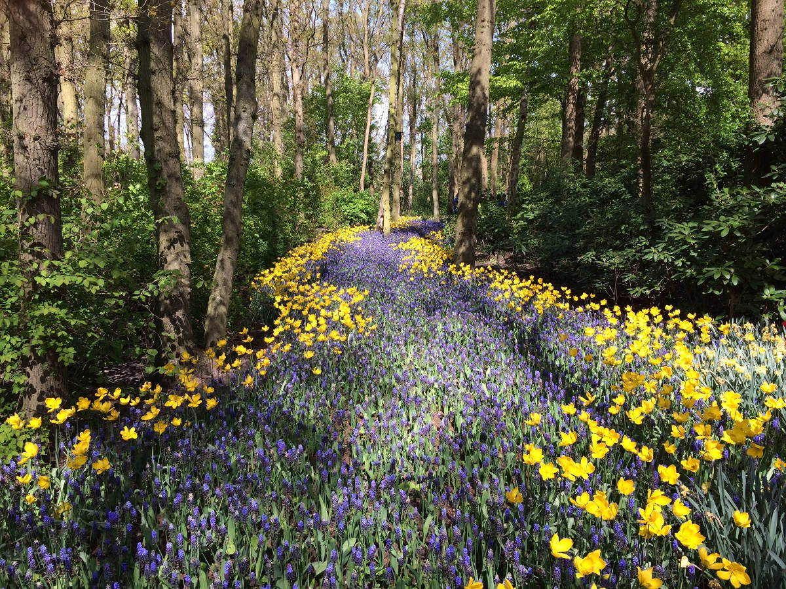
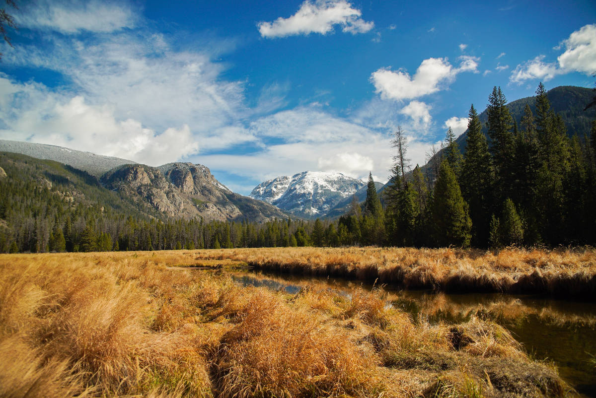
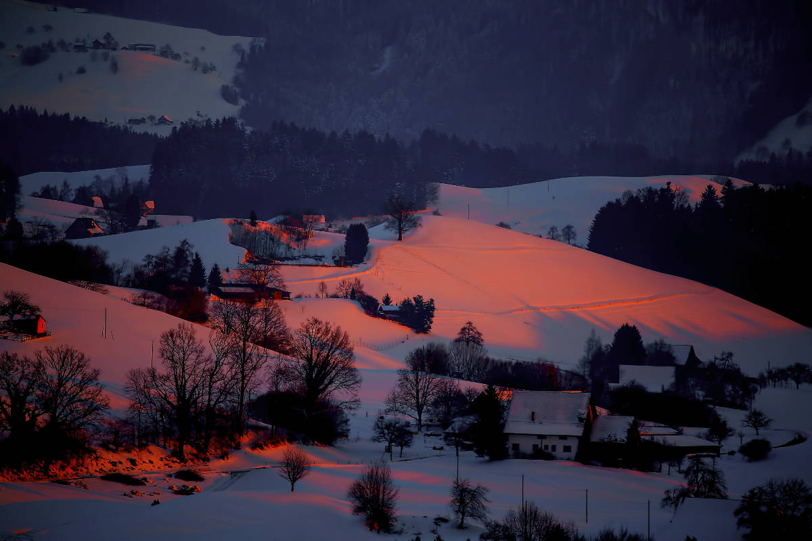

House on a Hill
House on a Hill
original by Peter Hammer

Walk on The Flower Road
original by Aaron Brunhofer

Mountains in The Distance
original by Keghan Crossland

In The Winter of Our Discontent
original by Ricardo Gomez Angel
 A View of The City
A View of The City
original by Mathew Waters
 Take a Stroll to Find The End of The Rainbow
Take a Stroll to Find The End of The Rainbow
original by Asa Rodger